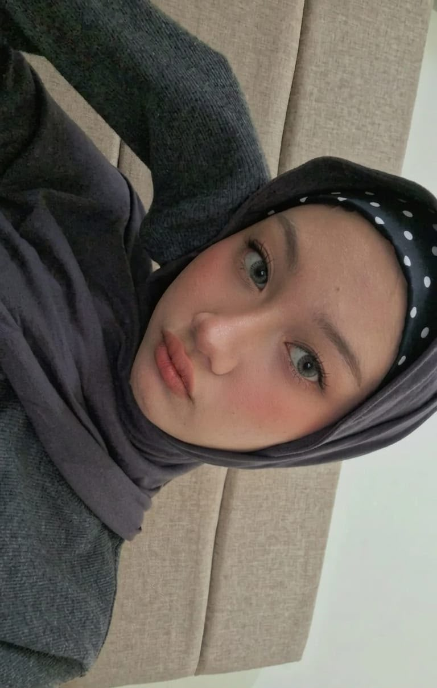
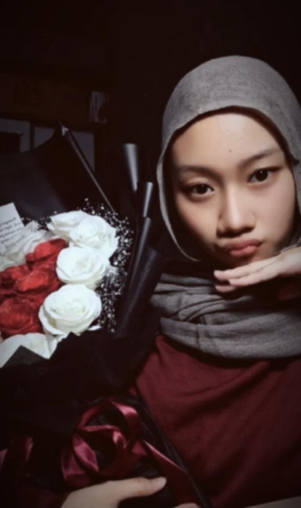
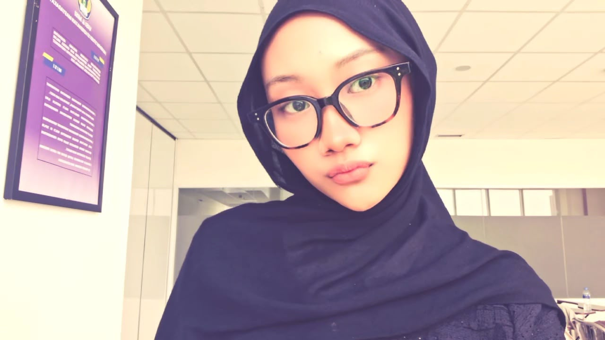
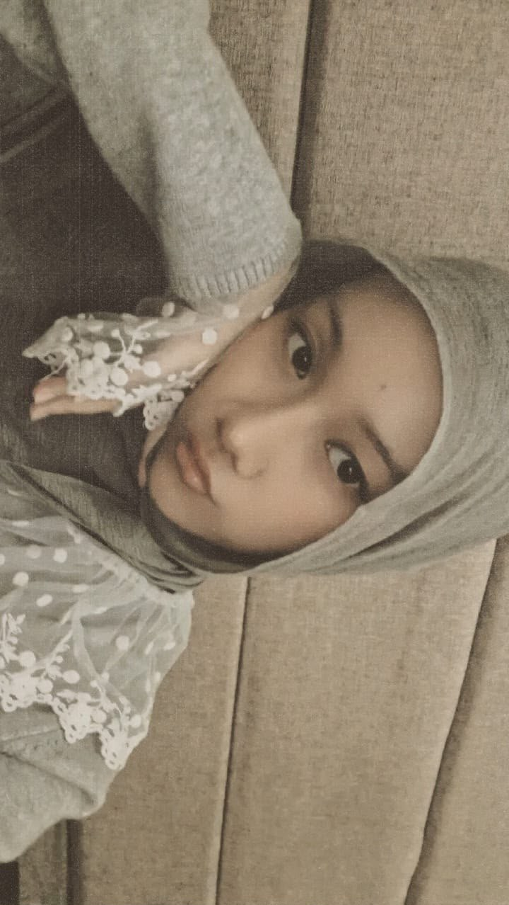

Beberapa foto mungkin cuma terlihat seperti foto biasa, tapi buat aku, semuanya punya cerita kecil yang bikin senyum. Jadi aku kumpulin di sini, khusus buat kamu. 🌷
Lihat kenangan kita ✨5 foto, banyak cerita, dan satu orang yang spesial.




Untuk Yunadya,
terima kasih sudah menjadi salah satu bagian paling manis
dari hari-hari aku. Semoga setiap kali kamu melihat halaman ini,
kamu selalu ingat kalau ada seseorang yang senang melihat kamu bahagia.
Keep smiling, Yunadya. You look beautiful when you do. ♡